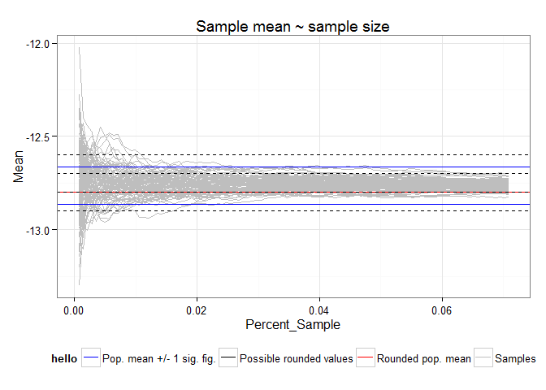

Example of population mean vs. sample mean for a typical map of SNAP’s Alaska-Canada 2-km downscaled data. The sample mean converges in distribution to the population mean quite quickly.
## [1] -12.7623## [1] -12.7623## [1] -12.7623## [1] -12.7623## [1] -12.7623
The difference between sampling vs. using all data in a map layer is minimal. It depends on various factors including but not limited to the statistic of interest, the spatial autocorrelation present in the map, and whether the entire map is of interest or just a particular region of a certain size.
In this example using the sample mean instead of the population mean, the difference is representative. The difference is also not particularly meaningful. It is also not final, as it tends to vanish anyway due to rounding to the nearest significant digits for the data after the statistic is computed. The difference in means can also be bounded arbitrarily even without the rounding to significant digits performed at the end.
In the case of the mean we are helped out by the weak law of large numbers and the central limit theorem. Consideration must also be given to the high level of spatial autocorrelation among pixels in the downscaled raster maps. There is simply not as much data or information present as one might think and this drives the effective sample size.